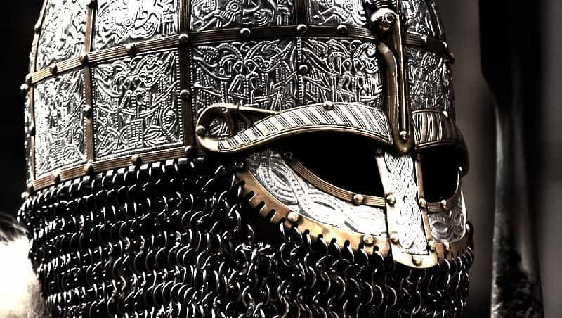
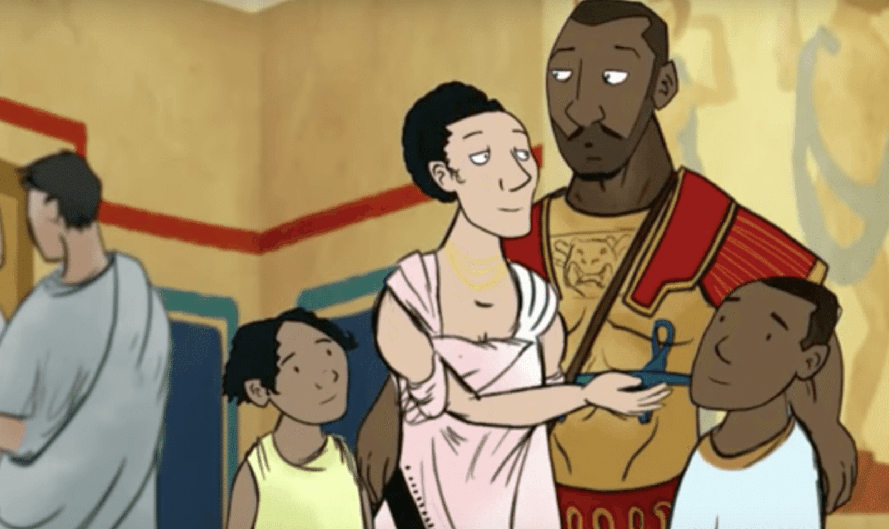
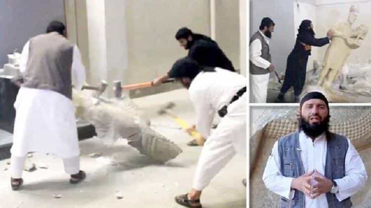

Following the revelations of one of its angry archaeologists, it emerges that the curators of Stockholms Länsmuseum have been ordering the systematic destruction of newly found artifacts from the Iron Age and the Viking period under the guise that it would be too burdensome to process.
Coins, arrow heads, ritual amulets, weapons, jewellery and weights that were kept in the past are now directly dumped into metal recycling bins upon discovery instead of being treasured and displayed.
The museum’s version
Following a recent surge in excavations aimed at construction that are occurring all over Sweden, the museum excavators are instructed to recycle unearthed iron elements into scrap metal following the pretext that “it would take too much resources to process, identify and store them.” The findings are usually quickly disposed of in order to make way for construction machines and building workers.
This was kept secret until this week’s declarations by Johan Runer, archaeologist at the said museum. He tried to raise the alarm before but only met indifference from the Liberal Swedish Media. According to Runer, this has been going on since at least 2016 as he recalls the example of an entire human settlement from the Bronze and Iron Age that discretely got levelled to allow road works for Sweden’s E6 motorway to progress. We do not know so far if this practice only incriminates this museum or is part of a greater scale.
How I picture the LänsMuseum’s board
Runer explains that the archaeologists cannot themselves auction the findings to the private sector as it would encourage crooks and robbers to then resell the treasure.
The mask slips and reveals the true motive
The money argument for a national museum implanted in one of the most prosperous countries on Earth (for now, before the “New Swedes” do what they do best) does not make sense. There is no shortage of funds in Sweden to host more refugees and promote multiculturalism in every media, but the money seems to vanish when it’s time to preserve European common heritage.
The tragic aspect of this situation is that those construction works that unearth the artifacts destined to be destroyed are probably the new buildings needed to house the freshly arrived migrants that the Swedish government is so eager to welcome. Talk about full circle.
Treasures thrown away when the answer is the people

Archaeological artifacts made of iron are altered by time and roughened by the terrain. No one can really judge of their quality and uniqueness until they are being processed and restored. In this particular case, no chance is taken and anything made of metal that is not well conserved is ditched.
It was even kept relatively secret until one researcher who could not take it anymore had to tell the world. Why do they not invite other museums around the world to collect and protect their artifacts in their name if money is an issue? I know at least ten museums around me that would stop everything they are doing right now to plan a trip and bring back the artifacts to add them to their collection.
Why don’t they store them in labelled wooden boxes as it was done for hundred of years? If not, let them ask for voluntary work to take care of the findings or let it be given to the native people that are interested in this culture. Even if used as door stops or cutlery, they’ll take better care of it than any Swedish liberal government.
The gods are angry
This news made my blood boil. I am an enthusiast of the Viking Age, being an eager student of its history, folklore and traditions as our readers have noticed in the past. But regardless of my attachment to this particular culture, it is the gross disrespect and complete lack of regard for an entire country’s History that makes me furious. And knowing the hardly-hidden motives behind it makes it worse.
Terminally ill patients suffering from the Liberal Cancer like Alice Bah Kuhnke (“New Suede” and Sweden’s Minister of Culture) are the ones that now approve those decisions and define what should compose Swedish History and choose what will be Sweden’s future.

Alice Bah Kuhnke
The same people that consider that the ideal treatment for returning ISIS fighters to Sweden should be more love and integration.
Today, Sweden. Tomorrow, us?
The leftoid cyborgs will be quick to declare “A few arrow heads and trinkets? So what? The Whites did the same yadi yada”.
This is where they are dead wrong. If we do not expose them and fight this lunacy, how will it stop? This story is just one more proof of the Left’s effort to shape the future of the their ugly world using the technique of the scorched earth.
It also follows recent claims from Leftists that ancient marble statues made thousands of years ago are actually racist and were specifically used to “whitewash history”. Other examples where History is targeted include the Left using violence and threats in order to get Southern generals statues removed from various locations in the United states.
Lately, the BBC used an incompetent feminist professor’s views to create an “educational cartoon” where, among other things, Roman centurions in Britain are black. This is one episode of a series where some Picts and Norman Barons are also black.

Caius Septimus WeWuzKangus is a historical reality according to the BBC Teach channel.
There is not much difference between those Liberal iconoclasts and the soldiers of the Islamic state’s goons smashing millennia-old statues and monuments with sledgehammers. In both cases, those who destroy claim that the targets are false idols. The first against a multiculturalist future and the latter against Allah.

Un peuple sans Histoire ne sait pas pourquoi il se bat
From Saul Alinsky’s “How to create a Socialist State”.
Such practices are revolting to say the least. A prime example of how Cultural Marxism aims at erasing the past to get rid of the last roots that our children can call theirs. Just like violent communist regimes in the past aimed first at burning libraries, bringing down churches, graveyards and museums before shooting teachers and scholars in the back of the head.
As our readers already now, the knowledge of history is a core concept in masculinity. Without respecting the ancient traditions of men, a stable and healthy future cannot be built.
By destroying elements attached to the idea of Viking culture, which valued financial success, bravery and putting one’s people first, Sweden’s self-loathing decision makers try to erase the few traces that show Sweden as something else than a multiculturalism-infected petri dish.
Destroy a people’s history so they cannot find a common heritage to fight for and you can start anew and create the society you seek. This shall not be.
Read more: Cultural Collapse Theory: The 7 Steps That Lead To A Complete Culture Decline